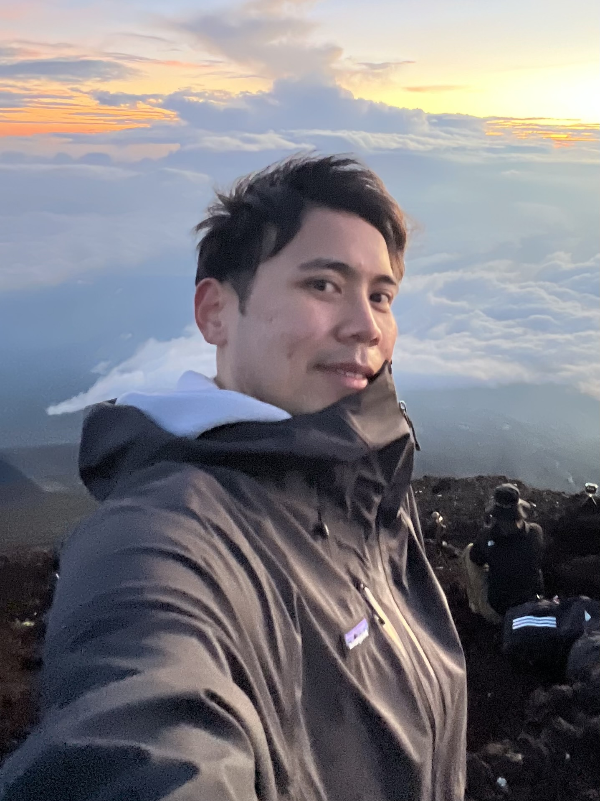

Quality Engineer (QE) · Bilingual QA Engineer
Tokyo, Japan
QA Engineer based in Japan with experience across web, mobile, automation, and test tooling. I have worked in bilingual teams and across multiple stakeholders, with a growing focus on framework design, workflow improvement, and technical QA ownership. I am especially interested in building maintainable automation systems, improving team productivity, and continuing toward a more SDET- and infrastructure-oriented path.
Professional
QA engineering across web, mobile, and automation in Japan — bilingual teams, multiple stakeholders, growing ownership of tooling and frameworks.
Personal Projects
Side projects and explorations — automation frameworks, AI-assisted tooling experiments, and things built for learning.
Research
Accessibility ideas, human-centered software quality, recommender systems, and data-informed QA concepts.